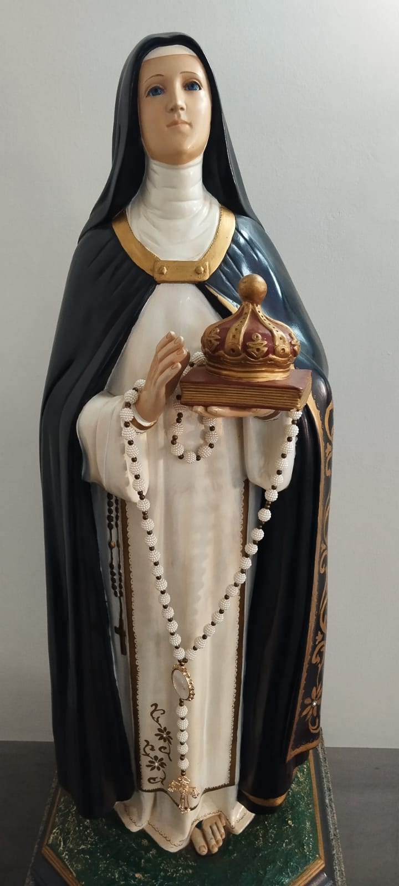

7 a 16 de Outubro
Novena, missas e quermesse em honra à padroeira dos pobres e endividados
7 a 16 de Outubro
Novena, missas e quermesse em honra à padroeira dos pobres e endividados

Santa Edwiges nasceu em 1174, na Alemanha, em uma família da nobreza. Ainda muito jovem, casou-se com Henrique I, príncipe da Silésia (região da atual Polônia), com quem teve seis filhos. Mesmo vivendo no ambiente luxuoso da corte, Edwiges sempre manteve um coração humilde e voltado inteiramente a Deus e ao serviço dos mais necessitados.
Ela exerceu uma forte e positiva influência nas decisões políticas de seu marido, sempre interferindo para que fossem criadas leis mais justas para o povo. O casal construiu diversas igrejas, hospitais e mosteiros. Com o tempo, decidiram juntos adotar uma vida de extrema simplicidade, despojando-se de suas riquezas em favor dos pobres.
Após a morte de seu esposo e de passar pela dor de ver quase todos os seus filhos falecerem antes dela, Edwiges retirou-se para o Mosteiro de Trebnitz, na Polônia. Ali, embora não tenha feito os votos formais para poder continuar administrando seus bens em favor da caridade, ela viveu como as monjas, dedicando seus últimos dias a cuidar pessoalmente de doentes, leprosos, órfãos e viúvas.
Faleceu em 15 de outubro de 1243 · Festa litúrgica em 16 de outubro